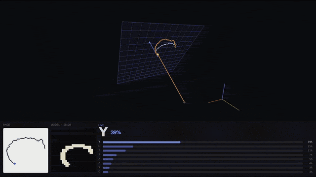

← back
Air Writing
Python · PyTorch · Kotlin · nRF52840 · BLE · IMU · Madgwick · EMNIST · HCI
Overview
Hands-free letter input from the same wrist-worn 6-axis IMU as
Gesture Band. Firmware already runs Madgwick
fusion and streams roll / pitch / yaw with the raw accel/gyro. The host treats
orientation as a hinge: a virtual pen tip of fixed length is rotated with the
wrist, a writing page is locked in space, and the tip is orthographically
projected onto that plane. The resulting polyline is rasterised to 28×28 and
classified by a small CNN trained on public EMNIST Letters — not on IMU windows.
Accel is never double-integrated. There is no ZUPT / INS position estimate.
Path on the page is length × Δangle; speed used for ink gating is
the Euclidean derivative of the smoothed 2D point. The Python demo
(page_projection.py) is the reference pipeline. The same
projection is used in the Kotlin field-service checklist, with navigation
gestures still driving UI and air-written letters filling text fields.

The clip shows the Python projection demo (virtual tip, locked page, 28×28
raster, letter commit), then the same pipeline in the Kotlin field-service
app, with wrist gestures for navigation.
Failed approach: letters as gesture classes
Gesture Recording Studio already trains a compact classifier on 240 ms
windows (24 samples at 100 Hz) with nine hand-crafted features (gyro/accel
std, range, axis dominance) and multi-class logistic regression. That works
for four mutually exclusive navigation bursts. Treating A–Z as more of those
classes did not:
- Writer variation is large; a 26-class (plus idle) labelled set is an order of magnitude more capture than four gestures
- Window summaries throw away stroke geometry — I / L / T / 1 occupy similar gyro energy
- A letter is a seconds-long trajectory, not a 240 ms burst, so start/end and multi-stroke structure never enter the feature vector
The fix is representational. Map the wrist into the ink domain handwriting
models already occupy, then reuse a public 28×28 glyph classifier. The same
projection then works for other alphabets or symbols by swapping only the
recogniser.
Geometry
Each BLE sample carries Euler angles from Madgwick. They are converted to a
quaternion with a pitch sign flip so the band frame matches the sketchbook
pose (forearm bent, writing toward the other palm). The local +X axis is
rotated to a unit pointing vector f and a tip
p = R(q) · (L, 0, 0) with L = 0.16 m in the
Python demo (0.28 m in the Kotlin 3D preview, so smaller wrist angles
still span a readable glyph).
A page is a plane with origin at the tip and normal along f at
lock time. Basis is gravity-upright: world up (0,0,1) is
projected out of f; if the residual is shorter than 0.25 (forearm
nearly vertical) a horizontal fallback is used, then
right = up × f and up is re-orthogonalised.
Instantaneous page coordinates are
x = −(p − origin) · right
y = (p − origin) · up
Position is EMA-smoothed toward that target (α = 0.30) so ink and speed share
the same lag; speed is a second EMA (α = 0.55) of
‖Δxy‖ / Δt with Δt clamped to 4–200 ms.
A 1.15 gain slightly enlarges the glyph without changing the speed gate.
After lock, origin and forward are frozen for the stroke so later wrist roll
cannot warp the letter.
Ink gate, page re-aim, trim
Usability was mostly a state machine on page speed, not more model capacity.
Thresholds are in metres/second on the projected point:
- Start ink at 0.14 m/s so a parked or slow hand does not write
- Hold ink down to 0.08 m/s so a slow curve (bowl of B, hook of J) does not drop out
- Pre-buffer 160 ms of samples; on the rising edge, points above 0.035 m/s are prepended so the gate does not clip the first stroke of T / N / K / Y
- Re-aim while not inking and speed < 0.035 m/s:
lock_page() every sample (Python) / higher follow rates while gyro is quiet (Kotlin). The page tracks the palm until ink starts, then freezes
- Lead-in trim drops the first 5% of path length after the letter is closed
- Still-tail trim drops trailing drift after the last point that exceeded 0.05 m/s — that tail is an artefact of waiting for a pause, and on one measured letter was 63% of the path (~4 points of accuracy when removed)
A secondary segmenter can cut at velocity minima (speed falling to 50% of the
current peak, then recovering above the stroke threshold, ignoring dips
shorter than 80 ms / 5 points) for multi-stroke letters. Letter gap is
260 ms still; word gap 1200 ms. Live commit in the demo currently
treats one pause-delimited polyline as one glyph.
Rasterisation
The polyline is drawn into a 224×224 buffer (8× the 28×28 output), centred,
aspect-preserving, with padding 0.12–0.20 of the frame. Gaps ≥70 ms or
≥2.2 cm are pen-ups and are not connected. A 0.8 px Gaussian blur
and bilinear downsample produce an EMNIST-like white-on-black glyph; y-up
page coordinates are flipped to image y-down. Ink thickness is scaled so
the downsampled stroke roughly matches EMNIST pen width.
Classifier
LetterCNN is trained on EMNIST Letters (A–Z), images transposed
to upright, 40k train samples, Adam 1e−3, 3 epochs, CPU. Architecture:
- Conv 1→32, 3×3, pad 1, ReLU, 2×2 max-pool
- Conv 32→64, 3×3, pad 1, ReLU, 2×2 max-pool
- FC 64×7×7 → 256, ReLU, dropout 0.3 → 26 logits
Air-written glyphs are slanted and uneven relative to pen EMNIST. At inference
each stroke is rendered as a 5×3×2 grid of views — rotations
{−15, −8, 0, +8, +15}°, ink weights {0.7, 1.0, 1.4}, paddings {0.12, 0.20} —
30 tensors in one batch. Softmax is averaged across views, not maxed
(max lets one unlucky high-confidence wrong view win). On 53 held-out
air-written letters that average was worth ~4 points; widening rotation past
±15° lost accuracy again.
A shape prior then damps classes that cannot match the bounding-box aspect
width/height. Below 0.36, only I/J keep full mass; T/E/F are
halved; everything else is crushed to 0.12. Between 0.36 and 0.58, wide
letters H/M/N/W/U are damped. A 0.20 threshold was too tight: a real I in
“DAVID” landed at 0.31 and lost to L.
Averaging flattens scores: a correct letter sits around 0.59, a wrong one
around 0.34. Live commit therefore uses 0.34 as a floor, not as “sure”.
Commit policy and lexicon
Inference runs every 100 ms once the stroke has ≥16 points. Commit
requires the hand below the hold-ink threshold, a prediction newer than the
still event, confidence ≥0.34, and top-1 minus top-2 ≥0.05. Three consecutive
agreeing letters must hold for 400 ms, or 550 ms if the guess is in
ILCJPT (stems of F/E/R/T — locking early turns an F into an I).
If the margin is too tight the hold timer resets. After commit the page
resets (~1.5 s) so the next letter does not inherit the last pose.
A prefix lexicon (system word list plus a small domain set) then reweights
the 26-way distribution by how often each letter continues the current stem.
Illegal continuations are multiplied by 0.28, not zeroed, so a novel word can
still win if the shape is overwhelming. If confidence ≥0.50 and the top-two
margin ≥0.12, the lexicon is skipped.
A 28×28 preview of the raster and a short 880 Hz ding on commit made
timing obvious. False positives dropped more from that feedback and the
hysteresis gate than from extra EMNIST epochs.
Hardware and transport
- nRF52840 + LSM6DS3 at 100 Hz; Madgwick on-device; BLE UART notify
6E400003-…
- 40-byte samples
<I9f: timestamp_ms, gx/gy/gz, ax/ay/az, roll, pitch, yaw — same framing as Gesture Recording Studio
- Scan: manufacturer 0xFFFF / ASCII
SY, or GAP name BAND
- Wrist mount for the demo (cabled during capture). Index-finger mount gave finer
L·Δθ control but more tremor; would need lower EMA α and a higher start-ink threshold
System design
page_projection.py — pygame host: live BLE + canned loop, ink state machine, commit, 3D page viewmotion.py — quaternion tip, gravity-upright basis, EMA pose/speed, explicit lock_page()segmenter.py — hysteresis cuts, trim_lead, trim_still_tailrasterize.py — supersampled polyline → 28×28, pen-up gapsclassifier.py — LetterCNN, 30-view TTA, aspect priorble_client.py — Bleak client, 40-byte unpack- Kotlin
MotionPipeline — same hinge/projection; idle nlerp of page forward/origin, freeze-on-motion
Technical challenges
- IMU-window classifiers cannot separate letters that share similar 6-axis energy but differ in 2D topology
- A page that tracks forever shears the glyph; a page that locks too early writes at an awkward angle — re-aim only while still
- Single speed threshold either false-starts or drops slow bowls; hysteresis + 160 ms pre-buffer is the working compromise
- Domain gap: air strokes vs pen EMNIST — TTA average and aspect prior recover more than training on a tiny custom IMU set
- I vs L: aspect 0.36, extra hold on prefix letters, and refuse-to-commit when top-2 margin < 0.05
- Sliding-window lead-in crop cost 10–15 points on 53 letters because the first stroke of T/N/K/Y is the glyph — do not record until the hand plants instead
What I learned
- For alphabet input, a geometric projection into a dataset the field already solved beats collecting 26 IMU classes
- Orientation-only hinge position is stable enough; accel integration is unnecessary and would drift
- The commit state machine (hysteresis, hold, margin, prefix delay, page reset) is most of the UX
- Mean-pool TTA is safer than max-pool when views can be confidently wrong
- A raster preview plus a beep closes the feedback loop the IMU otherwise does not provide
- Mount location is a gain/noise trade: wrist is convenient; finger needs heavier filtering
Current status
- Live Python BLE demo with page preview, TTA CNN, and hold-to-commit
- Same projection in the Kotlin field-service demo alongside the four navigation gestures
- Public weights:
models/emnist_letters_cnn.pt in IMU-Air-Writing-Demo
- Band, capture app, and gesture classifier: Gesture Band
Future work
- Finger-mount filtering (lower position EMA, gyro-based tremor notch, higher start-ink)
- Using velocity-minimum cuts for true multi-stroke letters instead of one polyline per pause
- Export the CNN to ONNX and run the 28×28 path on-device / on glasses
- Swap only the recogniser for digits, other scripts, or symbol sets on the same plane